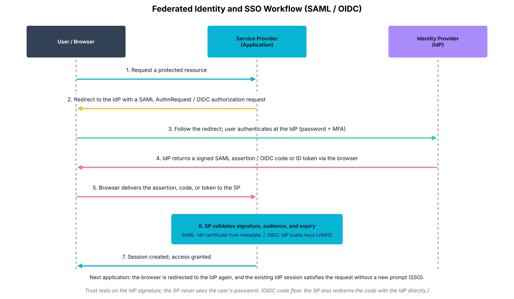
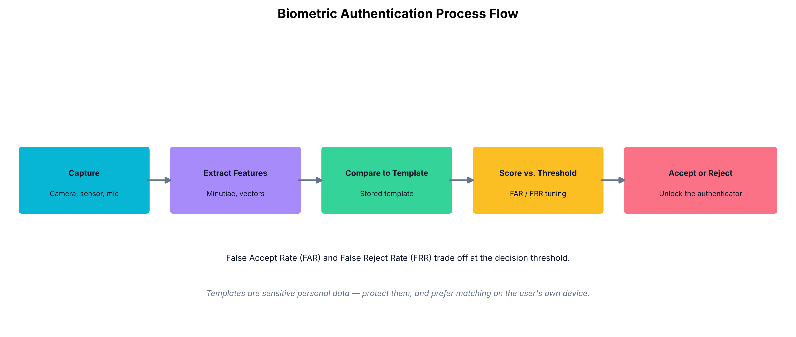

Chapter 5: Identity and Access Management Architecture and Engineering
Learning Outcomes:
- Design robust provisioning and deprovisioning workflows.
- Implement advanced access control models such as ABAC, MAC, DAC, and RBAC.
- Architect federation, SSO, and conditional access systems using modern identity providers.
- Troubleshoot common subject access control issues for users, processes, devices, and services.
- Manage secrets effectively, including the rotation and deletion of tokens, certificates, passwords, and keys.
- Analyze and resolve issues with authentication protocols.
- Apply endpoint privilege management and privileged access management (PAM) solutions.
- Troubleshoot IAM components across cloud and on-premises environments, including common identity-centric attack paths and trust abuses.
Introduction
If Chapter 4 was about where controls live, this chapter is about who the controls are protecting things from — and, just as importantly, who they are letting in. Identity has quietly become the most important security boundary in the modern enterprise. Firewalls and segmentation still matter, but when a contractor logs in from a coffee shop, when a microservice calls a payment API, or when an administrator pushes a Terraform change to production, the question that decides whether the action is safe is not “where did this packet come from?” It is “who is this subject, and are they allowed to do this right now?”
That is why Identity and Access Management (IAM) has moved from a back-office HR-adjacent function to one of the most consequential disciplines in security architecture. A well-designed IAM program decides who exists, what they may do, how strongly they must prove themselves, when their privilege is reviewed or revoked, and what evidence is kept when something goes wrong. A poorly designed one produces dormant admin accounts that outlive their owners, shared credentials buried in shell scripts, federation trusts nobody fully understands, and audit logs that cannot answer “who did this?”
Identity must be engineered end to end. That means provisioning and deprovisioning workflows, access control models such as RBAC, ABAC, MAC, and DAC, federation and single sign-on protocols including SAML, OAuth 2.0, and OpenID Connect, conditional access policies based on context, biometric and multi-factor authentication, privileged access management, secrets handling, the identity-centric attack paths that abuse these systems, and the everyday troubleshooting that occurs when Kerberos tickets expire, OIDC redirect URIs are misspelled, or 802.1X supplicants refuse to talk to the RADIUS server.
The thread tying all of this together is the same thread that ran through Chapter 4: trust must be narrow, conditional, and continuously evaluated. The IAM platform is where Zero Trust either becomes real or becomes a marketing slide (Rose et al. 2020; Temoshok et al. 2025).
How Do We Manage the Identity Lifecycle?
Every identity has a beginning, a middle, and an end. The middle is long and uneventful; the beginning and the end are where most incidents originate. An account provisioned with too much privilege on day one keeps it for years. An account not deprovisioned on someone’s last day may be used months later by an attacker who bought the stolen credentials on a forum.
The identity lifecycle describes the full journey of an identity from creation to retirement: request, approval, credential issuance, role assignment, periodic review, modification, suspension, and eventual deletion. Architects design this lifecycle so that each stage has clear ownership, automated triggers where possible, and an audit trail that someone can actually read.
Credential Issuance and Self-Provisioning
The first practical question is how does someone get a credential in the first place? In a small organization, this might be the IT lead handing out a temporary password over the phone. In an enterprise, it is a workflow that begins in HR, flows into an identity governance platform, and ends with automated account creation in Active Directory, an identity provider, SaaS applications, and possibly a hardware token.
Modern environments increasingly use self-provisioning patterns. A new hire receives an enrollment link, registers their device, sets up MFA, and proves identity through a one-time code sent to the manager or HR system. Identity proofing — verifying that the human behind the credential is actually the intended person — is sometimes layered in through document verification, a selfie compared against the ID photo, or a live video call with a trained agent. These steps matter because every weak point in initial enrollment lingers for the entire lifecycle.
Key Point An account is never more vulnerable to social engineering than during enrollment, password reset, or MFA re-registration. Attackers know this. Helpdesk procedures should treat these moments as high-risk transactions, not routine requests.
Provisioning and Deprovisioning
Provisioning is the process of granting a subject the access they need to do their job. Deprovisioning is the process of taking that access away when they no longer need it — whether because they changed roles, finished a project, left the company, or had their account compromised.
The mature pattern is automated provisioning driven by an authoritative source, usually an HR system or contractor management platform. When HR marks someone as hired, the identity governance system creates accounts in the directory and downstream applications. When HR marks someone as terminated, the same system disables accounts, revokes tokens, and removes group memberships — ideally in minutes, not days. The standard plumbing for this is SCIM (System for Cross-domain Identity Management), a REST/JSON protocol that lets an identity platform create, update, and disable accounts inside connected SaaS apps automatically. SCIM handles the account’s lifecycle; it complements SSO, which handles only sign-in.
The opposite, and unfortunately common, pattern is manual provisioning by ticket. A new hire’s manager files individual requests for each application. A leaving employee’s access is removed only when somebody remembers. The result is privilege creep: subjects accumulate access over years that nobody can justify and nobody can fully see.
A well-designed lifecycle includes:
- Joiner workflows that grant a baseline set of access tied to a job role, plus role-specific access via approval.
- Mover workflows that remove old privileges as roles change, not just add new ones.
- Leaver workflows that disable accounts on the last day and fully delete them after a defined retention period.
- Periodic access reviews where managers must affirm that each direct report still needs each privilege.
Example Cinderella joins Glass Slipper Tech as a backend systems administrator. Her joiner workflow grants the baseline “Engineering” role: email, Slack, GitHub, and the staging AWS account. Six months later she transfers to the Payments team. The mover workflow adds the “Payments-Engineer” role (PCI-scoped staging, the payments code repo, the on-call rotation) — and removes her access to the original team’s repository. Two years later she resigns. The leaver workflow, triggered by HR marking her terminated, disables her IdP account within minutes; SCIM propagates the disable to every federated SaaS app; her PAM vault entries are revoked; and after a 30-day retention window, the account is deleted. At no point did anyone file a ticket asking for the old access to be removed — the lifecycle did it automatically.
Subject Access Control: Users, Processes, Devices, and Services
It is tempting to think of “identity” as something that belongs only to humans. In a modern enterprise, that mental model is dangerous. Identities also belong to:
- Users — employees, contractors, customers, partners.
- Processes — scheduled jobs, batch scripts, automation pipelines.
- Devices — laptops, servers, IoT sensors, mobile phones.
- Services — microservices, APIs, cloud workloads, AI agents.
Each subject type needs an identity, a credential, and a defined relationship with the resources it accesses. Service identities are an enormous attack surface because they often hold long-lived credentials, run with broad privilege, and are rarely reviewed. A compromised service account can do more damage than a compromised user account because it operates silently and almost never triggers user-behavior alerts.
Warning Many organizations police human passwords closely yet cannot say when the service account behind the nightly database export last had its secret changed, or who still knows it. NIST says to stop forcing routine password changes for people (National Institute of Standards and Technology 2025), but machine secrets are the opposite case: no human needs to memorize them, so they should be vaulted and rotated automatically. A blind spot there is the size of the data warehouse.
Federation, Identity Providers, Service Providers, and SSO
In a small environment, every application can hold its own user database. In an enterprise, that is unworkable: hundreds of applications would mean hundreds of password resets, inconsistent MFA configurations, and places to forget to deprovision.
Federation solves this by separating who you are from what you can use. An Identity Provider (IdP) — such as Microsoft Entra ID, Okta, Google Workspace, or Ping Identity — owns the authentication event. A Service Provider (SP) — the application the user actually wants to use (OIDC and NIST call it a relying party) — trusts the IdP’s signed assertion that the user is who they say they are. The SP never sees the user’s password.
Single Sign-On (SSO) is the user-facing experience that federation enables: log in once at the IdP, and subsequent applications recognize the session without prompting again. The two dominant federation protocol families are:
- SAML 2.0 — XML-based assertions, widely used by enterprise SaaS and legacy applications.
- OAuth 2.0 / OpenID Connect (OIDC) — JSON-based, using signed JSON Web Tokens (JWTs), dominant in modern web and mobile applications. OAuth handles authorization (delegated access); OIDC layers authentication on top.
The architectural payoff of federation is enormous. Deprovisioning becomes a single act at the IdP rather than a scavenger hunt across dozens of apps. MFA policy is enforced once and applies everywhere. Conditional access — discussed later in this chapter — becomes possible because the IdP can evaluate the same device, location, and risk signals on every sign-in.

Figure 5.1: A federated SSO exchange. The user authenticates once at the Identity Provider, which issues a signed assertion or token, delivered through the browser, that the Service Provider validates without ever seeing the user’s password.Case Study Emma Woodhouse and the Offboarding Crisis at Highbury Networks
Emma Woodhouse had spent her first six months as the new IAM Specialist at Highbury Networks tidying up what her predecessor left behind. Highbury was a fast-growing analytics firm with about 1,400 employees and roughly 180 SaaS applications bought through a decade of departmental purchases. Provisioning was reasonably automated for Microsoft 365 and the core CRM, but the rest was a patchwork of manual requests and shared admin consoles.
The crisis began on a Friday afternoon. A senior data analyst named Wickham had been terminated for cause that morning. Emma’s automation disabled Wickham’s account in Microsoft Entra ID within fifteen minutes. By all appearances, the offboarding was clean.
Then, at 7:42 PM, Highbury’s SOC paged Emma. Wickham’s email account had been disabled, but two other systems were still showing active sessions associated with him: a marketing analytics SaaS that had been onboarded by the marketing team three years earlier without going through IT, and a third-party data vendor’s portal where Wickham had been a designated power user. Neither was federated to Entra ID. Both used local credentials. Both had been used to download customer data after Wickham’s termination.
Highbury’s DLP caught the second download attempt and the legal team recovered the data, but it was a wake-up call. Emma spent the following quarter on what she called the “federate or retire” project. Every SaaS application had to either come under Entra ID’s SSO umbrella, with deprovisioning tied to the HR feed, or be formally retired. Where an application supported SCIM but not SSO, Emma worked with the vendor to enable SCIM provisioning so that an account disable would happen automatically.
Eighteen months later, Highbury could disable a departing employee’s access across the entire SaaS portfolio in under five minutes. The incident with Wickham was the last time the company learned about an unfederated application from its SOC instead of from its inventory.
Quick Check 5.1
- Recall. What is privilege creep?
- Discriminate. Emma’s project used both SSO (SAML or OIDC) and SCIM. Which one proves who the user is at sign-in, and which one creates and disables the account inside the app?
- Apply. A contractor’s access is disabled at the IdP, yet she can still open a vendor portal that uses its own local passwords. Which lifecycle step failed, and what two fixes would Emma apply?
Answers — Quick Check 5.1
- Privilege creep is the gradual buildup of unnecessary access over time, especially when role changes only add privileges and never remove them.
- SAML or OIDC handle authentication (the IdP proves identity; the SP consumes the signed assertion or token). SCIM handles the account lifecycle inside the app. Disabling the IdP account stops new SSO sign-ins, but only SCIM (or manual cleanup) removes the app’s own account.
- Deprovisioning failed, because the portal sat outside federation. Emma would federate the app (SSO) or retire it, and enable SCIM so an HR-driven disable reaches the app automatically.
Which Access Control Model Is Right for the Job?
Authentication answers the question who are you? Authorization answers the question what are you allowed to do? Access control models are the formal frameworks an architect uses to answer the second question consistently across thousands of users and millions of resources.
There is no single best model. Each one trades off rigidity against flexibility, simplicity against expressiveness, and administrative effort against precision. Mature environments combine several of them.
RBAC, Rule-Based, ABAC, MAC, and DAC
Role-Based Access Control (RBAC) assigns privileges to roles rather than individual users. Users inherit privileges by being assigned to one or more roles. RBAC is the workhorse of enterprise IAM because it scales reasonably well: when a new accountant joins, you assign them the “Accountant” role and they instantly receive the right set of permissions. The weakness of RBAC is role explosion — over time, organizations end up with thousands of overlapping roles (“Accountant — Western Region — Senior — Read-Only”) because business reality is more nuanced than any role hierarchy can capture.
Attribute-Based Access Control (ABAC) evaluates access decisions based on attributes of the subject, the object, the action, and the environment. A policy might say: “A user with department=Finance and clearance=Confidential may read documents tagged sensitivity=Confidential during business hours from a managed device.” ABAC is far more flexible than RBAC and can express conditional logic, but it requires high-quality attribute data and careful policy authoring. A wrong attribute on a single document can grant or deny access in surprising ways.
Mandatory Access Control (MAC) enforces access decisions based on system-assigned classifications and labels that ordinary users cannot override. Government and military systems are the classic examples: a document classified Top Secret may only be read by subjects cleared to Top Secret, no matter who created the document. MAC is rigid by design — that rigidity is its security value.
Discretionary Access Control (DAC) allows the owner of a resource to decide who else may access it. Unix file permissions and Windows NTFS access control lists are familiar examples. DAC is flexible and intuitive but produces inconsistent enforcement and is easy for users to misconfigure (everyone has shared a folder “with the whole company” at some point).
Rule-based access control applies a fixed set of administrator-defined rules to every request, whatever the subject’s role or ownership: a firewall ACL, a router that accepts SSH only from the admin subnet, or a rule that blocks all payroll logins after 7 PM. It is consistent and easy to automate, but it ignores who is asking. Watch the acronym: “RBAC” means role-based, so rule-based is always spelled out.
Example Consider how each model handles the same request at Geneva Labs: “Allow Dr. Frankenstein to read patient record #4471.”
- DAC: Whoever created the record (perhaps the admitting nurse) added Dr. Frankenstein to its ACL. If the nurse forgot, he cannot read it — even though clinically he should.
- RBAC: Dr. Frankenstein has the role “Attending Physician — Cardiology.” Anyone with that role can read any cardiology patient record. Simple, but the nephrology consult he also needs is invisible to him.
- ABAC: A policy says: “A physician may read a patient record if (treating_team contains physician.id) OR (consult_request exists for physician.id on patient.id).” The decision is made fresh on each request from current attribute data.
- MAC: The record carries a system-assigned label “PHI — Cardiology Ward.” Only subjects whose clearance includes that label can read it, and no doctor — not even the chief of medicine — can override the label themselves.
| Model | Decision Driver | Strengths | Weaknesses | Common Use |
|---|---|---|---|---|
| RBAC | Role assigned to subject | Scales well, easy to audit | Role explosion, coarse granularity | Enterprise applications, ERP, HR systems |
| ABAC | Attributes of subject, object, action, context | Highly expressive, supports Zero Trust | Requires clean attribute data, harder to debug | Cloud IAM, conditional access, data tagging |
| MAC | System-enforced classifications | Strong, consistent enforcement | Inflexible, administrative overhead | Government, military, regulated environments |
| DAC | Resource owner’s discretion | Simple, intuitive | Inconsistent, easy to misconfigure | File systems, shared drives, collaboration tools |
| Rule-based | Fixed rules applied to every request | Consistent, easy to automate | Ignores subject identity; rules pile up and conflict | Firewall and router ACLs, time-of-day logon restrictions |
Policy Decision and Enforcement Points
Modern IAM architectures separate the decision about whether to grant access from the enforcement of that decision. Two terms, first met in Chapter 4, describe this split:
- Policy Decision Point (PDP): The component that evaluates the policy and returns a decision (permit, deny, or sometimes “permit with obligations”).
- Policy Enforcement Point (PEP): The component that actually allows or blocks the action — typically a gateway, proxy, application middleware, or operating system kernel.
The payoff is consistency. When dozens of applications each implement their own access logic, policy drifts; when they all consult a centralized PDP, a policy change applies everywhere at once. This is the foundation of Zero Trust enforcement: one policy engine evaluating context-rich requests, and many enforcement points in front of resources.
Conditional Access and Context-Based Controls
Conditional access is ABAC dressed for the cloud. Modern identity providers let architects write policies such as:
- Require MFA for any sign-in from an unmanaged device.
- Block access to financial systems from outside approved countries.
- Require step-up authentication when a user attempts to access a high-sensitivity application.
- Allow contractor accounts to sign in only between 7 AM and 7 PM in their working time zone.
Example A finance analyst tries to open the corporate ERP from a hotel Wi-Fi network on a Saturday evening. The conditional access engine evaluates the request: the user is in a permitted role (✓), but the device is unmanaged (✗), the location is outside the usual country (✗), and the time is outside business hours (✗). Rather than allow or deny outright, the policy issues an obligation: grant access only after a step-up FIDO2 challenge AND restrict the session to read-only for two hours. On Monday morning at the office, the same user would have been signed in silently. Same identity, same resource, different decision — driven by context.
Conditional access policies typically combine several signals: user-to-device binding (this credential is tied to this enrolled device), geographic location (where the request originated), time-based controls (when access is permitted), and device trust (is the endpoint compliant with patching, encryption, EDR posture). These are the same signals we discussed in Chapter 4’s Zero Trust section — IAM is simply where most of them are evaluated (Rose et al. 2020; Temoshok et al. 2025).
Much conditional access troubleshooting is about configuration. Test a new policy in report-only mode first, so the logs show who would have been blocked. Exclude one or two monitored break-glass emergency accounts, so a bad rule cannot lock out every administrator. And because VPNs and proxies distort apparent location, treat location as a risk signal rather than the only gate.
Thought Question A contractor needs access to one application, from one specific laptop, only during business hours, only from inside the country where they were hired. How would you express this requirement in RBAC alone? How does ABAC or conditional access make it easier — and what new failure modes does it introduce?
Attestation, Biometrics, and Identity Proofing
Some access decisions require stronger evidence than a username and password. Attestation is evidence that a subject — or the device the subject is using — is in an expected and trustworthy state. A laptop may attest that it booted with Secure Boot enabled, has a healthy TPM, and is running the corporate EDR agent. A workload may attest that it was signed by an approved CI/CD pipeline. Attestation moves the access decision from “I trust your password” to “I trust the cryptographic evidence about your environment.”
Multifactor authentication (MFA) requires proof from at least two different categories: something you know (password, PIN), something you have (security key, phone, smart card), or something you are (biometric). Two passwords are still one factor. Strength varies widely: SMS codes and push approvals can be phished or abused, while FIDO2/WebAuthn credentials, marketed as passkeys, are phishing-resistant because the browser signs a challenge with a private key bound to the real site’s domain, so a look-alike site gets nothing usable. A device-bound passkey keeps its key in hardware where it cannot be exported; a syncable passkey is backed up through a cloud keychain for convenience (Chapter 8 returns to passwordless design).
NIST SP 800-63-4 grades authentication strength in three authenticator assurance levels (AAL1 to AAL3). It accepts syncable passkeys at AAL2 (where verifiers must also offer a phishing-resistant option), but AAL3 requires a non-exportable, phishing-resistant authenticator, so syncable passkeys do not qualify there (National Institute of Standards and Technology 2025). Its password rules are equally specific:
- Length over complexity: at least 15 characters when a password is the only factor (8 when it is part of MFA), and accept 64 or more.
- No composition rules and no periodic changes: do not require symbols or capitals, and change a password only when compromise is suspected.
- Blocklist screening: check every new password against a list of common or breached values.
Biometric authentication uses physical or behavioral characteristics — fingerprints, face geometry, iris patterns, typing rhythm — as part of an authentication flow. NIST SP 800-63B-4 allows biometrics only together with a physical authenticator (the phone or key is “something you have”; the biometric merely unlocks it), requires a non-biometric alternative, prefers matching on the user’s own device, and does not permit voice comparison (National Institute of Standards and Technology 2025). Biometrics also raise their own architectural concerns:
- Templates, not images. The system stores a mathematical representation, not the raw image. Treat templates as sensitive personal data, encrypt them, and prefer on-device matching so there is no central database of faces or fingerprints to breach.
- FAR and FRR trade-offs. The False Accept Rate (FAR) is how often the system wrongly accepts an imposter; the False Reject Rate (FRR) is how often it wrongly rejects a legitimate user (NIST calls them the false match and false non-match rates). Lowering one usually raises the other; the point where they are equal is the crossover error rate (CER), a common way to compare systems. Tune the threshold to the sensitivity of the resource.
- Biometrics are not secrets. A face can be photographed and a fingerprint lifted from a glass, and you cannot issue a new finger if a template leaks. That is why biometrics serve as one factor among several, backed by presentation attack detection (PAD), or liveness checks, to catch photos and masks.

Figure 5.2: The biometric authentication pipeline — capture, feature extraction, template comparison, threshold scoring, and the final accept/reject decision.Recall that identity proofing happens at enrollment, and NIST grades it. SP 800-63-4, finalized in 2025, defines three identity assurance levels (IALs). IAL1 requires collecting identity evidence, validating it, and verifying that the applicant owns it. IAL2 requires stronger or additional evidence and more rigorous verification (for example, an automated selfie-to-ID comparison) and can still be done remotely. IAL3 requires on-site, attended proofing with a trained agent. The same suite grades federation transactions in three federation assurance levels (FALs) (Temoshok et al. 2025). Architects choose the level based on the sensitivity of what the identity will eventually be allowed to do.
Physical and Logical Access Control
A complete IAM program covers both physical access control systems — badges, turnstiles, mantraps, biometric door readers — and logical access control systems — directories, identity providers, application authorization. The two are converging: the identity that opens the data center door may also unlock the jump host for the servers inside. When physical and logical IAM are unified, one revocation event removes both the badge and the network access. When they are separate, the badge office and the helpdesk often disagree about who still works at the company.
Quick Check 5.2
- Recall. What does a PDP do, and what does a PEP do?
- Discriminate. (a) A file owner manually decides who else can read a folder. (b) A system rule blocks every account from a server outside 8 AM to 6 PM, regardless of role or ownership. Which is DAC and which is rule-based?
- Apply. A contractor needs one application, from one laptop, only during business hours, only inside one country. Which model from the chapter expresses that cleanly, and which signals should it use?
Answers — Quick Check 5.2
- The PDP evaluates policy and returns the decision; the PEP enforces that decision.
- (a) is DAC, because the owner exercises discretion over the resource. (b) is rule-based, because a fixed rule applies to everyone no matter who they are.
- ABAC or conditional access. It should evaluate signals like user-to-device binding, geography, time, and device trust.
How Do We Secure High-Privilege Accounts?
Most accounts in an enterprise can do limited damage if compromised. A handful — domain administrators, cloud root accounts, database administrators, certificate authority operators, CI/CD pipeline service accounts — can cause catastrophic harm. These are the accounts attackers actually want, and they are the accounts that justify disproportionate investment in protection.
Privileged Access Management (PAM)
A Privileged Access Management (PAM) platform is the architectural answer to “how do we let humans use admin privilege without giving them standing admin privilege?” A well-designed PAM solution provides:
- Vaulted credentials. Privileged passwords are stored in a hardened vault. Users check out access for a defined window (or the session broker injects the credential without the user ever seeing it), and the password is rotated automatically afterward.
- Just-in-time elevation. Standing membership in admin groups is replaced with on-demand elevation that expires automatically — often called just-enough access (JEA) combined with just-in-time (JIT) access. Cloud platforms build this in: Microsoft Entra Privileged Identity Management, for example, makes admin roles eligible rather than permanent and activates them for a limited time, with approval.
- Session brokering and recording. Privileged sessions go through a jump host or session broker that records keystrokes, screen activity, and commands for audit.
- Approval workflows. High-impact actions require a second approver, with the request and approval logged immutably.
- Strong authentication for the PAM tool itself. PAM is the single most attractive target in the environment; protecting it with phishing-resistant MFA and dedicated admin workstations is non-negotiable (National Institute of Standards and Technology 2025). Endpoint privilege management (EPM) applies the same least-privilege idea on the workstation itself: remove permanent local administrator rights and elevate only specific approved applications or tasks on demand, with logging (Chapter 9).
A common pattern in mature organizations is the tiered administration model: Tier 0 contains identity infrastructure (domain controllers, IdP, PAM, certificate authorities); Tier 1 contains business-critical servers; Tier 2 contains user workstations. Credentials and sessions never cross tiers downward. A Tier 0 administrator never logs into a Tier 2 workstation with their Tier 0 credentials, because doing so exposes those credentials to anything that may be running on the workstation.
Secrets Management and Credential Rotation
Beyond human privilege, machines need credentials too. API keys, database passwords, TLS certificates, signing keys, OAuth client secrets, and cloud access keys all live somewhere. Where they live determines how safe they are.
Secrets management platforms — HashiCorp Vault, AWS Secrets Manager, Azure Key Vault, Google Secret Manager, CyberArk Conjur — provide:
- Centralized storage of secrets with strong encryption at rest.
- Programmatic retrieval via authenticated APIs, so applications fetch secrets at runtime instead of embedding them in config files or source code.
- Automatic rotation on a schedule or triggered by events.
- Fine-grained access policies that define which workload, on which host, with which identity, may retrieve which secret.
- Audit logging of every secret access.
Example A payment-processing microservice needs to talk to a PostgreSQL database. The insecure pattern: a
DATABASE_PASSWORD=hunter2line in a.envfile checked into git. The mature pattern: at startup, the service authenticates to HashiCorp Vault using its Kubernetes service-account token. Vault verifies the pod’s identity with the cluster, confirms a policy that lets this workload readdatabase/creds/payments, and returns a dynamically generated database credential valid for 60 minutes. When it expires, the running pod requests a fresh one. An attacker who dumps one pod’s memory gets a credential that dies within the hour, and Vault’s audit log records exactly which pod fetched which secret, and when.
Rotation matters because the longer a secret lives,
the more places it has been copied and the more hands have seen it. For
machine secrets (API keys, database credentials, signing keys,
service-account passwords), best practice is automated routine rotation
— or, better, short-lived dynamic credentials like the Vault example —
plus immediate rotation after any suspected exposure. Human passwords
are the exception: calendar-based changes just teach users predictable
tweaks (Password1! becomes Password2!), so
change a person’s password when compromise is suspected, as the NIST
rules above say. Public TLS certificate lifetimes are also shrinking
under CA/Browser Forum rules, so certificate renewal must be automated
too (Chapter 8). A manual “rotate every 90 days” checklist for machine
secrets will fail under operational pressure.
Deletion is the other half of the lifecycle. Revoke and then actually remove secrets nobody needs: unused API keys and OAuth tokens, certificates for decommissioned servers, old secret versions a vault keeps after rotation, and the keys and tokens of departed employees or retired systems. When a key protects data that must disappear, destroying the key (cryptographic erase, Chapter 8) can be enough.
Warning Hardcoded secrets in source code repositories are one of the most common root causes of cloud breaches. Once a secret has been committed to git, rotating it is the only safe response — even if you delete the file in the next commit, the history retains it forever. Secrets scanning in CI/CD pipelines should be standard.
Logging, Auditing, and Cloud IAM Trust Policies
Privileged access is meaningful only if it leaves an audit trail. Every elevation, every secret retrieval, every administrative action should land in centralized logging — and that logging must be on a path the privileged user themselves cannot tamper with. A common architectural mistake is to allow domain administrators write access to the SIEM that records their actions.
Cloud environments add another dimension: trust policies that define which identities — including identities in other accounts, other clouds, or other organizations — may assume privileged roles. A misconfigured trust policy that says “any AWS account may assume this role” is functionally a public administrator account. Architects should review trust policies the way they review firewall rules: with a presumption of skepticism and a written justification for every entry.
Case Study SolarWinds and the Golden SAML Attack
The 2020 SolarWinds compromise, in which attackers slipped a malicious update into SolarWinds’ Orion network-management software, is one of the most-studied supply chain attacks in modern history. For this chapter the most relevant detail is what the attackers did after gaining a foothold. Once inside selected victims, the threat actor — attributed by the U.S. government to Russia’s Foreign Intelligence Service (SVR) — pivoted toward the identity layer (Mandiant 2020; Cybersecurity and Infrastructure Security Agency 2021).
The technique, named Golden SAML by CyberArk researchers in 2017 and used in this campaign, worked like this. In a federated environment, the on-premises Active Directory Federation Services (AD FS) server signs SAML assertions using a private token-signing certificate. An attacker with administrative access to that server could export the signing certificate and its private key, then mint SAML assertions for any user, with any claims they liked, including claims saying MFA had already been performed. Service providers — including Microsoft 365 — accepted the forged assertions as legitimate, because the signature verified (Mandiant 2021).
The forged assertions gave the attackers access to victims’ cloud email and documents. The IdP never saw a password check, MFA prompt, or sign-in, because the attacker never talked to it, and at the service provider every login looked valid. The telling sign was a sign-in at the SP with no matching authentication event at the IdP, which only defenders who collected logs from both sides could spot (Mandiant 2021).
The architectural lessons are sharp. Federation servers and their signing certificates are Tier 0 assets and must be protected as fiercely as domain controllers. Token-signing keys should live in hardware security modules (HSMs), tamper-resistant devices that use a private key without ever exposing it. Cloud IAM trust policies should be reviewed for unexpected SAML issuers. Identity logs from both the IdP and the SP should be centralized so a forged assertion can be cross-checked against unusual access at the SP. And after a suspected theft, the signing certificate must be rotated, twice in quick succession, so tokens signed with the old key stop working. Federation is enormously powerful — but it concentrates trust in a small number of cryptographic secrets, and those secrets must be defended accordingly.
Quick Check 5.3
- Recall. What does just-in-time privileged access replace?
- Discriminate. If an attacker steals the AD FS token-signing certificate, is that mainly a password problem or a federation trust problem?
- Apply. Name two protective steps the chapter recommends for limiting Golden SAML-style damage.
Answers — Quick Check 5.3
- It replaces standing admin privilege with temporary, time-limited elevation.
- A federation trust problem. The attacker can forge SAML assertions that service providers will accept as real.
- Any two of: treat federation servers as Tier 0; keep the signing key in an HSM; review cloud trust policies for unexpected SAML issuers; centralize IdP and SP logs so a forged assertion shows up as an SP sign-in with no IdP event; rotate the signing certificate after a suspected theft.
How Do Identity Attacks Actually Unfold?
IAM is not only a configuration problem; it is also an attack surface. Threat actors abuse identity stores, federation relationships, tokens, enrollment workflows, and administrative paths, which is why identity troubleshooting and threat-actor TTPs overlap so heavily.
Many “identity incidents” are not pure authentication failures; they are attack paths that use identity for persistence, escalation, or lateral movement. If an analyst sees repeated lockouts, impossible-travel alerts, unexpected MFA registrations, or administrative actions from a legitimate service account, the question is not only “which configuration is wrong?” It may also be “which attack pattern is being expressed through the identity system?”
Privilege Escalation, Credential Dumping, and Token Abuse
The most obvious IAM-relevant TTP is privilege escalation. Attackers who land on a low-privilege workstation often move quickly to steal hashes, Kerberos tickets, browser tokens, cached credentials, or local administrator secrets. The goal is not to authenticate once but to become a more powerful subject.
Credential dumping is an identity problem as much as an endpoint problem. LSASS memory scraping, browser-session theft, token export from cloud command-line tools, password-vault theft, and replay of cached credentials all convert one foothold into wider access. In federated environments, the equivalent may be theft of refresh tokens, signing keys, or service-account secrets. In cloud environments, it may be abuse of instance metadata services or workload identities to obtain access tokens that were never meant for a human operator.
The defender’s job is to recognize the architectural weak spots that make abuse possible: excessive standing privilege, reusable secrets, weak session binding, poor token revocation, weak service-account hygiene, and missing audit trails for privileged credential use.
Key Point Identity compromise often looks like a sequence rather than a single event: credential access, privilege escalation, token abuse, then persistence. The earlier the architecture forces reauthentication, attestation, or vault-mediated access, the harder it is for that sequence to complete.
Unauthorized Execution, Lateral Movement, and Defensive Evasion Against Identity Infrastructure
Many IAM incidents are really unauthorized execution problems expressed through legitimate administration paths. A threat actor who obtains a valid admin token may use PowerShell remoting, remote management APIs, scheduled tasks, CI/CD runners, or cloud automation roles to execute actions that appear operationally normal. Defenders must ask not just whether an action succeeded, but whether the subject, path, and context make sense.
Lateral movement is frequently identity-enabled. A captured Kerberos ticket enables access to another service. A reused local administrator password enables pass-the-hash. An over-permissioned SaaS integration lets an attacker pivot from collaboration tools into document repositories or identity consoles. In hybrid environments, movement may cross trust domains, from on-prem Active Directory to cloud federation, or from a compromised automation secret into multiple cloud subscriptions.
Defensive evasion in identity systems usually looks boring, which is why it works. Attackers disable logging on a connector, register their own MFA device, add a second OAuth consent, create a backdoor federation trust, or deliberately operate through existing admin tools so the activity blends into normal change traffic. These quiet forms of abuse make identity-centric incidents hard to diagnose.
Injections and Trust Boundary Manipulation in Identity Workflows
Injections in IAM contexts usually mean an attacker is manipulating a trust boundary rather than “just” attacking an application form field. Examples include LDAP injection against poorly constructed directory queries, SAML or OIDC parameter tampering, SCIM provisioning abuse, malicious claims insertion through a compromised identity broker, or redirect and consent manipulation that causes a legitimate identity flow to produce an illegitimate outcome.
These failures are dangerous because they exploit systems defenders are conditioned to trust. A poisoned claim in a federated assertion may still be cryptographically valid if a compromised issuer generated it, and a connector that writes the wrong group membership may look like an ordinary synchronization event until the downstream privilege becomes visible.
| IAM-Centric TTP | Typical Objective | Common Symptom | High-Value Defensive Signal |
|---|---|---|---|
| Credential Dumping | Steal reusable credentials or tokens | Impossible travel, sudden token reuse, access from a nonstandard host | LSASS access alerts, refresh-token anomalies, vault checkout logs |
| Privilege Escalation | Move from ordinary to administrative identity | Unexpected group membership or role assignment | Privileged-role change logs, JIT approval bypass, PAM session anomalies |
| Unauthorized Execution | Run actions through valid admin paths | New automation job, remote task, or script from an unusual subject | PowerShell or runner telemetry tied to identity context |
| Lateral Movement | Reuse identity material to pivot between systems | Same account touching unrelated tiers or trust zones | Cross-tier authentication events, new service ticket paths, anomalous east-west access |
| Defensive Evasion | Reduce visibility or blend into trusted activity | Logging disabled, MFA device changed, new trusted app registration | Audit setting changes, MFA reset events, connector configuration drift |
| Injection / Trust Manipulation | Alter an identity workflow or query outcome | Odd provisioning result, claim mismatch, or redirect abuse | Directory-query anomalies, assertion validation failures, SCIM or IdP admin changes |
Later chapters revisit the same activity from other angles — host abuse in Chapter 9, detection patterns in Chapter 11, evidence to reconstruct in Chapter 12 — but the trust relationships, credential paths, and authorization failures that make it dangerous are fundamentally identity problems.
Case Study Hamlet Spots an Identity Attack at Denmark Cyber Defense
Hamlet, a senior threat hunter at Denmark Cyber Defense, was reviewing the previous day’s identity telemetry when one service account caught his attention. The account belonged to a synchronization connector that normally authenticated from one management host, requested one narrow set of directory permissions, and generated almost no interactive activity. Overnight, the same account had authenticated from a different server, requested new OAuth consent, and been followed minutes later by a burst of privileged group lookups and remote administrative activity.
None of the individual events looked spectacular. The login succeeded, the consent grant appeared valid, and the remote commands ran through approved tooling. Taken together, though, they formed a recognizable pattern: compromised service credentials, privilege expansion, unauthorized execution through legitimate admin paths, and defensive evasion through trusted infrastructure.
Hamlet pivoted through the logs and found the missing detail. An attacker had abused a provisioning connector with broader rights than it needed, then used that foothold to request additional tokens and enumerate privileged roles. Because the activity traveled through expected systems, first-line alerts treated it as routine administration. What exposed it was the TTP sequence, not any single indicator.
The response focused on identity first. The connector secret was rotated, its permissions were reduced, all recently issued tokens were revoked, and the team added detections for management-plane logins from nonstandard hosts, abnormal consent grants, and privileged directory reads by service principals. The lesson: identity telemetry becomes far more useful when defenders look for sequences of behavior instead of isolated misconfigurations.
How Do We Troubleshoot Authentication Failures?
A surprising amount of an IAM engineer’s life is spent diagnosing authentication failures: a user cannot log in, an automation account suddenly stops working, a SaaS integration loops endlessly between the IdP and the SP, a wireless client refuses to associate. These protocols are interoperable in theory and finicky in practice, so troubleshooting depends on understanding what each one actually does.
SAML, OAuth, and OpenID Connect
These three protocols dominate modern federation. They are related but not interchangeable.
| Protocol | Type | Token Format | Typical Use Case | Common Failure Modes |
|---|---|---|---|---|
| SAML 2.0 | Authentication + authorization assertion | Signed XML assertion | Enterprise SaaS SSO, legacy apps | Clock skew, certificate expiry, mismatched entity IDs, broken signature validation |
| OAuth 2.0 | Delegated authorization | Opaque or JWT access token | API access, letting an app act on a user’s data (e.g., read a calendar) | Wrong scopes, expired tokens, redirect URI mismatch, refresh token revoked |
| OpenID Connect (OIDC) | Authentication on top of OAuth 2.0 | JWT ID token + access token | Modern web/mobile SSO | Misconfigured discovery endpoint, JWKS rotation, audience claim mismatch |
SAML troubleshooting almost always comes down to one of four issues: (1) the IdP and SP disagree on the entity ID or assertion consumer URL, (2) the signature does not validate because the SP has the wrong or an expired IdP certificate, (3) clock skew makes the assertion “not yet valid” or “expired,” or (4) the attributes in the assertion do not match what the SP expects (e.g., the SP keys on email but the IdP sends UPN). A SAML tracer browser extension that captures the actual assertion is usually the fastest diagnostic tool.
Example A new SaaS app rolls out and every user sees “SAML response invalid.” The IAM engineer captures the assertion with a SAML tracer and finds two problems. First, the assertion’s
NotBeforeis14:02:11Zbut the SP’s clock reads13:59:48Z— a 2-minute, 23-second skew that puts the assertion in the SP’s “future.” Second, the assertion’s<Audience>ishttps://app.vendor.com/saml/but the SP’s own entity ID ishttps://app.vendor.com/saml. Two fixes — sync the SP host to NTP, and remove the trailing slash from the audience configured at the IdP — and the entire user base can log in. Both errors produced the same generic “invalid response” message; only the captured assertion told the real story.
OAuth and OIDC troubleshooting has its own characteristic problems. Redirect URI mismatches — even a trailing slash — will block the flow entirely, and that strictness is deliberate: exact matching stops an attacker from steering authorization codes to a URL they control. Scopes that the client requests but the authorization server has not granted will produce subtle authorization failures rather than authentication errors. The JWKS endpoint that the SP uses to fetch the IdP’s public signing keys must be reachable and the keys must rotate gracefully; a stale JWKS cache after a key rotation will cause every token to fail validation simultaneously. Current best practice, such as requiring PKCE (Proof Key for Code Exchange, which ties an authorization code to the client that requested it) and dropping the implicit grant, is being consolidated into OAuth 2.1, which as of this writing is still an IETF draft rather than a published standard (Hardt et al. 2026). OAuth 2.0 and OIDC remain the deployed protocols.
Kerberos, EAP, 802.1X, and SAE
A different set of protocols handles authentication on internal networks and Wi-Fi.
Kerberos authenticates users and services in Windows domains and Unix realms via ticket-granting tickets and service tickets. It depends critically on time synchronization (typically a five-minute skew tolerance), correct DNS resolution, and properly registered Service Principal Names (SPNs). Common failures: clock drift after a virtual machine resumes from snapshot; missing or duplicate SPNs after a service account is reused; trust relationships that work in one direction but not the other.
Extensible Authentication Protocol (EAP) is a framework for transporting authentication exchanges, most commonly over 802.1X for wired and wireless network access. The supplicant on the endpoint, the authenticator on the switch or AP, and the authentication server (usually RADIUS) must all agree on the EAP method and the certificates involved. EAP-TLS authenticates both sides with certificates and is the strongest; PEAP and EAP-TTLS authenticate the server with a certificate and the user with a credential inside a tunnel. EAP-TLS failures are typically certificate problems: the client’s cert is expired, was issued by an untrusted CA, or its CRL/OCSP check fails.
Simultaneous Authentication of Equals (SAE) is the password-based key exchange used in WPA3 personal networks, replacing WPA2’s pre-shared-key (PSK) method; a four-way handshake still follows to set up the session keys. SAE resists offline dictionary attacks and provides forward secrecy. Troubleshooting SAE issues usually involves client compatibility — older devices may not support WPA3 at all, and some “WPA3 transition mode” configurations have shipped with bugs that cause intermittent association failures.
Biometric and MFA Anomalies
When MFA fails, the temptation is to disable it for the user “just for now.” Attackers exploit impatience too, through MFA fatigue attacks, where they trigger repeated push notifications until the user finally taps Approve to make them stop. The mature response is not to disable MFA but to use number matching and push prompts that show the location and application, and to require step-up via a phishing-resistant factor such as a FIDO2 security key (National Institute of Standards and Technology 2025).
Biometric anomalies are usually environmental: a fingerprint sensor fails after a screen replacement; face recognition refuses to enroll under unusual lighting; a reader struggles with dry or worn fingertips. A robust IAM program offers a fallback authentication path that is itself strongly authenticated — typically a hardware token combined with a brief identity verification — rather than letting the helpdesk reset MFA on a phone call.
Warning A frequent identity incident is “user clicked an Approve push notification they should not have approved.” A bare push approval is easy to abuse. Number matching and context (location, app) are architectural mitigations rather than user-training problems, but they are not phishing-resistant: an attacker’s proxy page can relay the real sign-in prompt, number and all, and the user still approves it. Only phishing-resistant authenticators such as FIDO2 keys and passkeys close that gap.
Quick Check 5.4
- Recall. What three things does Kerberos depend on working correctly?
- Discriminate. A user’s SAML login fails with “assertion not yet valid,” while their OIDC login to another app works. Is the likelier cause clock skew or a stale JWKS cache?
- Apply. A user keeps approving MFA pushes they did not initiate just to make the prompts stop. What fix does the chapter recommend instead of disabling MFA?
Answers — Quick Check 5.4
- Time synchronization, DNS resolution, and correct SPNs.
- Clock skew. “Not yet valid” means the assertion’s time window and the SP’s clock disagree. A stale JWKS cache instead breaks signature validation for OIDC tokens.
- Use number matching and context-rich prompts as mitigations, and step up to a phishing-resistant factor like FIDO2 where possible.
Chapter Review and Conclusion
In this chapter we examined identity as the connective tissue of modern security architecture. We started with the identity lifecycle — joiner, mover, leaver — and saw why automation, authoritative HR feeds, and federation separate an IAM program that scales from one that quietly accumulates risk. We compared the major access control models — RBAC, rule-based, ABAC, MAC, and DAC — and looked at how policy decision points and policy enforcement points let architects centralize policy without centralizing every application.
We walked through conditional access, attestation, MFA and passkeys, biometrics, and identity proofing as the modern signals that turn authentication from a one-time event into a context-aware decision. We then dedicated focused attention to high-privilege accounts: PAM platforms, just-in-time elevation, session brokering, secrets management, rotation and deletion, and the painful lesson of Golden SAML — that federation concentrates trust in a small number of cryptographic secrets that must be defended like the crown jewels they are. We also examined the attack paths that abuse IAM directly — credential dumping, privilege escalation, unauthorized execution, lateral movement, defensive evasion, and injection — and finished with authentication troubleshooting across SAML, OAuth, OIDC, Kerberos, EAP, 802.1X, SAE, and the everyday MFA and biometric failures that fill an analyst’s queue.
The thread connecting all of this is precision. Identity is where Zero Trust either becomes operational or remains a slogan. The architect’s job is to ensure every subject — human or machine — has exactly the access it needs, only when it needs it, only when the context justifies it, and only with strong enough evidence of who it is.
Key Terms Review
- Identity Lifecycle: The full sequence of an identity’s existence from creation through retirement.
- Provisioning / Deprovisioning: Granting and revoking access in a controlled, auditable workflow.
- SCIM: System for Cross-domain Identity Management, a protocol that automates creating, updating, and disabling accounts in connected apps.
- Identity Proofing: Verifying that a person enrolling a credential is actually who they claim to be.
- Assurance Levels (IAL/AAL/FAL): NIST’s three-step grades for identity proofing, authentication strength, and federation strength.
- Privilege Creep: Gradual accumulation of excessive privileges over time as a subject’s role changes.
- Identity Provider (IdP): The system that authenticates a user and issues signed assertions or tokens.
- Service Provider (SP): The application that consumes assertions or tokens from the IdP.
- Federation: A trust arrangement in which applications accept signed assertions or tokens from an external identity provider instead of keeping their own credentials.
- Single Sign-On (SSO): The pattern of authenticating once and accessing many federated applications.
- SAML 2.0: XML-based federation protocol for enterprise SSO.
- OAuth 2.0: Delegated authorization framework using access tokens.
- OpenID Connect (OIDC): Authentication layer built on top of OAuth 2.0 using JWT ID tokens.
- RBAC: Access control based on roles assigned to subjects.
- ABAC: Access control based on attributes of subject, object, action, and environment.
- MAC: System-enforced classification-based access control with no user discretion.
- DAC: Resource-owner-controlled access decisions.
- Rule-Based Access Control: Administrator-defined rules applied to every request regardless of the subject’s role.
- Policy Decision Point (PDP): The component that evaluates access policies.
- Policy Enforcement Point (PEP): The component that enforces the PDP’s decision.
- Conditional Access: Context-aware access policies that combine signals like device posture, location, and time.
- Attestation: Cryptographic evidence that a device or workload is in a trustworthy state.
- Multifactor Authentication (MFA): Proof from at least two different factor categories: something you know, have, or are.
- Passkey (FIDO2/WebAuthn): A phishing-resistant public-key credential bound to a site’s domain; it may be device-bound or syncable.
- False Accept Rate (FAR) / False Reject Rate (FRR): The two error rates that biometric systems trade off.
- Privileged Access Management (PAM): Platform for vaulting, brokering, and auditing privileged sessions.
- Just-in-Time (JIT) Access: Temporary, time-limited elevation of privilege rather than standing membership.
- Endpoint Privilege Management (EPM): Removing standing local admin rights and elevating specific applications or tasks on demand.
- Secrets Management: Centralized, audited storage, rotation, and deletion of machine credentials.
- Golden SAML: Attack technique using a stolen token-signing key to forge SAML assertions.
- Credential Dumping: Theft of reusable credentials, tickets, hashes, or tokens from a system.
- Privilege Escalation: Gaining a higher level of authorization than originally granted.
- Lateral Movement: Using compromised identity material to pivot to additional systems or trust zones.
- Defensive Evasion: Actions taken to reduce visibility, suppress logging, or blend into legitimate administration.
- Unauthorized Execution: Running code or commands through valid credentials or admin paths without authorization.
- Injection: Manipulating an identity query, claim, or workflow input so a trusted system produces an unintended outcome.
- Kerberos: Ticket-based authentication protocol for Windows domains and Unix realms.
- 802.1X / EAP: Framework for port-based network authentication, commonly over Wi-Fi or wired switches.
- SAE: Simultaneous Authentication of Equals, the WPA3 password-based key exchange that replaces WPA2’s pre-shared-key method.
- MFA Fatigue: Attack pattern that triggers repeated push prompts until the user approves.
Practice-Based Questions
Apply The Chapter
Emma Woodhouse Handles a Hostile Offboarding
Design PBQ. Step through a hostile-offboarding playbook from an IdP account export — IdP disable, token rotation, session revocation, SSH key removal, PAM, SCIM.
Diagnose The Failure
Emma Reviews the Churchill Aftermath
Diagnostic PBQ. The IdP kill switch worked perfectly — and 43 days later the ex-employee force-pushes a backdoor anyway. Walk backward and identify everything federation did not cover.
Synthesis Activities
These open-ended activities extend the chapter beyond what a search engine or chatbot can answer. Each works alone or in a group, and the goal is the conversation, debate, or artifact itself. Sidebars show how to use a chatbot as a practice partner, never as a source (Chapter 0 explains how).
Conduct an Interview (1 hour)
Talk to someone who actually does this work — an IAM admin, identity architect, IT helpdesk lead, or compliance officer at your school, employer, or a willing local organization. Three questions worth asking:
- Walk me through what happens when a new employee starts on Monday — every system that has to know about them by end of day.
- What’s the messiest part of the identity lifecycle in your environment, and why hasn’t it been fixed?
- When was the last time you had to revoke access in a hurry, and what made it hard?
Follow up on whatever surprises you. The point is to hear the work in someone’s own words.
No one to interview? Rehearse with a chatbot playing a senior IAM architect at a 5,000-person logistics company. The rehearsal shows which of your questions are too vague to spend on a real person.
Hold a Debate (1 hour)
Pick the position you find least sympathetic and argue it as well as you can (in class, assign positions and go live):
- Federation should be mandatory for every business application, no exceptions. The risk of unfederated apps drifting out of HR-driven deprovisioning outweighs every other concern.
- Federation slows fast-moving teams and concentrates risk in one identity provider whose outage halts the entire company. A pragmatic IAM program lives with some unfederated applications and offsets them with strong manual offboarding.
- SSO and federation build a surveillance dossier no employee meaningfully consented to. The convenience to administrators carries a real privacy cost that the security field consistently understates.
Studying alone? Have a chatbot attack your argument as a senior security architect, citing real federation outages, real breaches that exploited unfederated apps, and real privacy concerns about SSO logging.
Track a Current Debate (20 min)
Find an identity-related incident, regulatory action, or vendor controversy from the last six months. Good starting points: CISA advisories on identity-system compromises, NIST SP 800-63-4, and FIDO Alliance passkey updates. Be ready to explain to a classmate, in two minutes, what happened, which identity control failed, and what others are changing as a result. Bring two primary sources.
Lab Artifact: Decode a Real JWT (20 min)
Web apps hand your browser OIDC ID tokens or OAuth access tokens as JWTs. Capture one of your own and reverse-engineer what your identity provider asserts about you.
- Log into a service that uses OIDC. Google, Microsoft, GitHub, or any site where you click “Sign in with Google/Microsoft/GitHub” will work.
- Open your browser’s developer tools (F12), go to the
Application or Storage tab, and look under
Cookies or Local Storage for a long string starting
with
eyJ. You can also watch the Network tab during login for a request whose response body orAuthorizationheader contains a JWT. - Paste that string into jwt.io. The site decodes the header and payload locally in your browser — it does not transmit the token.
- Identify the issuer (
iss), audience (aud), subject (sub), expiry (exp— convert from Unix time), and signing algorithm (headeralg). Find at least two other claims and figure out what they mean. - Answer for yourself: what would change about your access to this
service if you altered the
expfield and resubmitted the token? Why does the answer have to do with the signature?
Safety: A live JWT is a credential. Do not paste tokens from your employer’s systems, your school’s SSO, or any account that isn’t yours. Use a personal test account if you’re unsure.
Map a Trust Boundary (2+ hours)
Federation concentrates trust into a small number of cryptographic relationships. Diagram them explicitly for one system and identify where you have the least confidence in the trust assumptions:
- The “Sign in with Google/Microsoft/Apple” flow for a SaaS application you actually use.
- Your school’s or employer’s SSO portal, federating to a handful of downstream applications.
- A hypothetical RBAC + ABAC hybrid for a small healthcare clinic with EHR, HR, billing, and a patient-facing portal.
Draw the identity provider, service providers, attribute sources, policy decision points, policy enforcement points, and every signing key, certificate, or shared secret that makes the trust work. Mark each trust boundary. For each, answer: what crosses it, what control validates what crosses, who controls the key material, and what happens if that key is stolen? The boundary where compromise would do the most damage is the “Tier 0” relationship the architecture depends on.
The point is not to design a perfect system; it is to see, on paper, where the architecture’s neck is exposed.